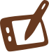
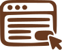

Clareza como resultado de decisões bem projetadas.
Cada detalhe tem um porquê. O essencial, sem ruído.
Projeto mais recente
O IndexPonto é um sistema de ponto eletrônico desenvolvido para modernizar o controle de jornada de servidores públicos. O projeto busca digitalizar esse controle, reduzir erros operacionais e aumentar a transparência entre usuários e gestão.


Quatro áreas do design em que atuo.
Atuo em diferentes áreas do design, unindo criatividade, estratégia e funcionalidade para criar soluções e experiências.

Ilustração
Criação de ilustrações autorais que comunicam ideias, traduzem conceitos e dão vida a narrativas visuais.

UI/UX Design
Criação de interfaces intuitivas e experiências digitais centradas nas necessidades das pessoas.
Acessibilidade
Desenvolvimento de experiências mais inclusivas, considerando diferentes necessidades e formas de interação.
Identidade visual
Construção de identidades visuais que traduzem a essência de marcas em sistemas gráficos consistentes e reconhecíveis.
Minha trajetória através do design.
Experiências que moldaram meu olhar criativo e ampliaram minha forma de pensar e desenvolver soluções em design.
Visualizar currículo completo (abre em nova aba)IndexTech
Criação de identidades visuais e interfaces web, com contribuições em design systems.
SmartRetail/IMD
Times multidisciplinares, manutenção do design system e validação com usuários.
PROPESQ
Identidades visuais e diagramação de manuais para eventos científicos da UFRN.
Projetos
Fale comigo
Disponível para projetos, colaborações e oportunidades em design.
Entre em contato para conversarmos.